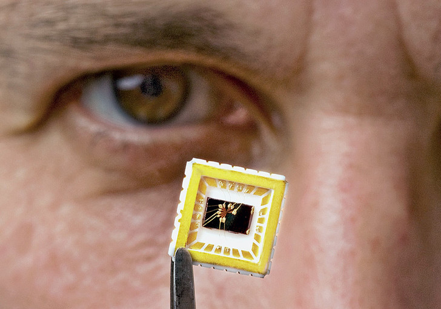
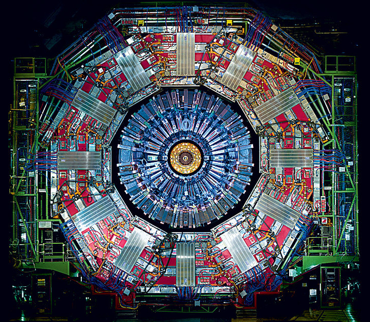
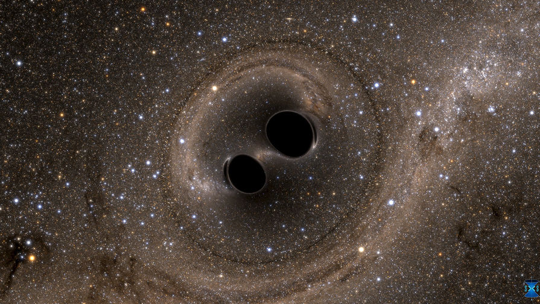

Самые значимые открытия по физике XXI века
Обнаружена квантовая телепортация
Такая телепортация отличается от телепортации, о которой любят говорить фантасты, — при ней материя или энергия не передаются на расстояние. Эксперименты по передаче квантовых состояний на большие расстояния были удачно проведены за последние 15 лет не менее чем десятком научных групп. Квантовая телепортация очень важна для создания сверхзащищенных шифров и квантовых компьютеров.
Экспериментально подтверждено существование графена
Его двумерная (толщиной в один атом) кристаллическая решетка проявляет необычные электрофизические свойства. Впервые графен был получен Андреем Геймом и Константином Новоселовым в 2004 году (Нобелевская премия за 2010-й). Его планируется использовать в электронике (в сверхтонких и сверхбыстрых транзисторах), композитах, электродах и т. д. Кроме того, графен — второй по прочности материал на свете (на первом месте — карбин).

Найден бозон Хиггса
Существование этой элементарной частицы, отвечающей за массу всех прочих частиц, теоретически было предсказано Питером Хиггсом еще в 1960-х годах. А найдена она была во время экспериментов на Большом адронном коллайдере в 2012-м (за что Хиггс, совместно с Франсуа Энглером, получил Нобелевскую премию 2013 года).

Открытие гравитационных волн
Ученые в США подтвердили существование гравитационных волн, предсказанное почти сто лет назад общей теорией относительности Альберта Эйнштейна. Гравитационные волны – это колебания ткани пространства-времени, которые разбегаются от массивных объектов, движущихся с переменным ускорением
